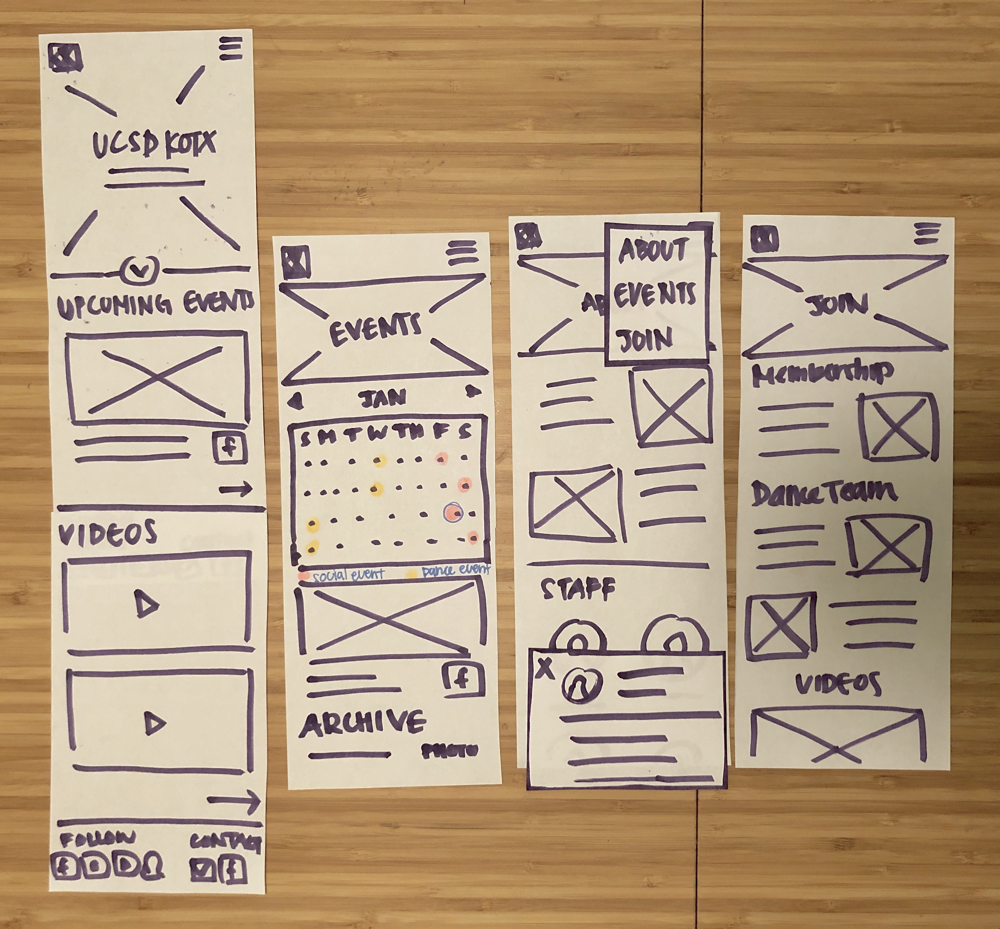

KOTX
KOTX is the first K-pop dance and social organization at UCSD. It was founded by Kevin Nguyen in 2015 to be a place where K-pop fans could share their love of Korean entertainment and learn K-pop dance choreography.
We partnered with KOTX to make visual mockups of their organization's future website.
Roles: Researcher, visual designer
Skills: Needfinding, user interviews, storyboarding, wireframing, rapid prototyping, visual design
Deliverables: Client survey, personas, creative brief, wireframes, prototype
Date: Jan - Mar 2019 (10 weeks)
Teammates: Alexandra Wei, April Gau, Jason Liu
Client Survey
After meeting with our clients and interviewing them about the org, we learned that KOTX prides itself on its all-inclusiveness and its approachable and fun-loving attitude. Members are passionate about K-Pop culture and discuss it within their Facebook group posts, but this sometimes occludes posts with information on upcoming events. It holds a mixture of social events and dance workshops that teach choreography to their covers. Thus, they wanted a website that communicates the vibrant personalities of the group along with a way to display their event information and covers.
User Interviews + Personas
We came up with a list of potential user types to look into and reached out to people based on these predicted user types. We originally expected to have all KOTX members be under one persona. However, after interviewing, we found that new members and prospective members have very similar needs due to their lack of familiarity with KOTX, thus it made sense for us to separate KOTX members into new and returning. We also found through our interviews that there was a group of users that needed information in terms of working with KOTX rather than joining the group.
For each persona, we made scenarios that they would likely encounter on the site and use cases for each of those scenarios. We did this to help us understand which features on the site that should be prioritized.
View the all personas, use cases, and interview data here.
Competitive Analysis + Moodboards
We looked into college organizations' websites, along with websites for professional dance studios or groups. We liked how the college org sites had a generally simple navigation and content layout but the branding seemed too professional and even sterile if KOTX were to employ such branding. Furthermore, the dance studio sites we saw were mostly black, which conflicted with our stakeholders' desire to have "splashes of color" in KOTX's shades of purple and pink from the graphics on their Facebook events. We realized after, however, that the choice to include dark colors was conscious and to emulate a dance studio or theater. Sites that had personalized bios of members gave a sense of familiarity and humor that we wanted to incorporate into our site. Thus, we took all this into account in our final design.
.jpg)
.jpg)
.jpg)
.png)
Creative Brief + Lo-Fi Wireframes
We then detailed our plans in a creative brief that we presented to our client in one of our meetings to get their feedback. In it, we detailed the 4 HTML pages that we planned to implement, along with our intended audience from our personas. We also defined our objectives for the site along with some sketches of what the potential design, in which the client agreed to after meeting.
View the full creative brief here.
Hi-Fi Wireframes and Functional Specification
In another meeting, we detailed the features that we planned to implement through the annotated screenshots in our functional specification. The client liked the layout of the frames and we also performed user testing and usability issues were minor.
View the full functional specification here.

Try out the full mobile wireframes here.
Try out the desktop wireframes here.
Prototypes + Card Sort
In our latter prototypes, we decided to focus on finalizing our content formatting and styling. A few of our clients gave some suggestions on changes we could make: they wanted the format of the website to better emphasize gallery images, the social aspect of the group, and they wanted better placement of staff information.
.jpg)
Since we wanted to determine what new navigation would work best, we spent a week conducting open card sorts to see how different people would organize and categorize the site content we are considering. After, we tallied the data in a spreadsheet to see which layouts seemed most commonly sorted. We also created 6 style tiles representing different branding choices and had members comment on which they liked in a Google Form for feedback.
Link to card sort data here.
.jpg)
.jpg)
.jpg)
More User Testing + Final Prototype
While we conducted card sorting and finalizing styling, we had 3 users run through the site and got varying feedback on the site navigation. Some issues were
- that the location of staff information was unclear because the section resided under ‘About’ and
- that ways of getting involved and joining the org weren’t very clear and
- that the gallery was hard to find because it was hidden in the archive of ‘Events’
We addressed this by having the gallery (which was originally titled as 'Archive' in the events tab) more visible and labeled as such. We also made a contact page since our clients wanted more emphasis on contacting KOTX other than the footer. Furthermore, there was a lot of overlap between what a dance team vs. general member could do. We clarified this with our client and had detailed instructions and images to illustrate this difference. After showing this to our client, we received positive feedback.
Check out the final prototype in desktop here!
And the final prototype in mobile here!!